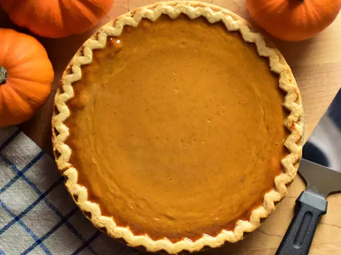

Pumpkin Pie

A simple and delicious pumpkin pie recipe.
Learn how to make pumpkin pie with this easy pumpkin pie recipe. Show off your baking talent by serving this "easy as pie" classic for Thanksgiving or anytime you need a delicious dessert.
Thanksgiving wouldn't be complete without a homemade pumpkin pie. But we're going to let you in on a little secret: Making the seasonal dessert is actually quite simple. Don't let the season pass you by without trying this easy pumpkin pie recipe.
Ingredients
- Pie Crust: Store bought pie crust.
- Pumpkin Puree: 16-ounce can of pumpkin puree.
- Sweetened Condensed Milk: One can sweetened condensed milk.
- Eggs: Two whole eggs.
- Pumpkin Pie Spice: One teaspoon pumpkin pie spice.
Steps
- Mix: Combine pumpkin puree, sweetened condensed milk, eggs, and pumpkin pie spice. Mix until smooth.
- Assemble: Pour the pumpkin mixture into the pie crust.
- Bake: Bake in an oven preheated to 425 degrees F for about 15 minutes. Reduce heat to 350 degrees and continue baking until the filling is set.